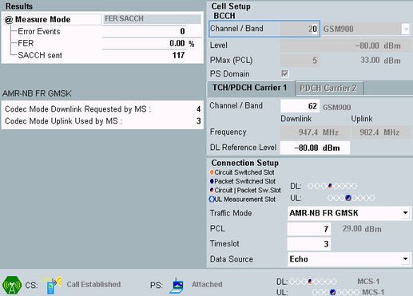

The tab shows measurement results to the left and settings to the right.
The settings are common settings of the "GSM Signaling" application. Changing the values in one view changes the values in all views of the "GSM signaling" application. For parameter descriptions, see "Main Settings".
Additional settings of the "GSM signaling" application can be accessed via the "Signaling Parameter" softkey and the related hotkeys.
The connection status information displayed at the bottom is the same as in the "GSM signaling" main view, see "Connection Status".
To switch to the signaling application, press the "GSM Signaling" softkey two times.
The "Config" hotkey opens either the configuration dialog of the measurement or the configuration dialog of the signaling application, depending on which softkey is active.

For a detailed description of the results, see "BER CS Measurement".
Remote command:Queries the DL AMR codec mode requested by the MS and the actual UL codec mode used by the MS. This information is only available if AMR traffic mode is used (see also "AMR Configuration").
Separate commands are available for the half-rate (HRATe) and full-rate (FRATe) narrowband (NB) and wideband (WB) AMR codecs, for GMSK and 8PSK modulation.
Remote command: